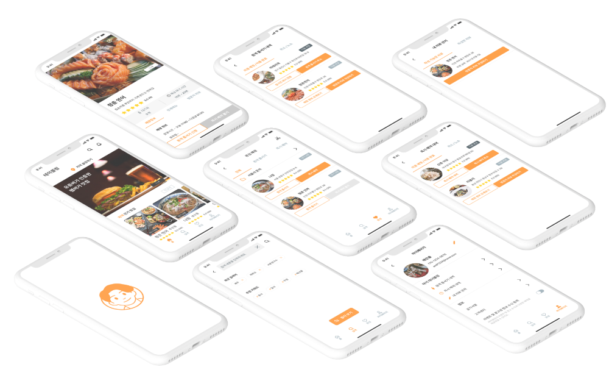

- 맛집 줄서기 APP
‘테이블링’ 리디자인 - Line up for good restaurants APP ’Tabling’ Redesign
- 제작 기간 : 2021 . 04 . 04 ~ 2021 . 06 . 20
기여도 : 개인 100%
사용 프로그램 : figma
- 앱 테이블링은 웨이팅 맛집 줄서기 앱이다.
현재의 기능과 UI를 타 앱과 비교 분석 후 기존 앱의 문제점을 도출하였다.
그 후 문제점을 해결하기 위해 해결책을 찾고, 그것을 바탕으로 GUI 디자인을 하였다.
사용자가 기존의 앱보다 더 명확하고 편리한 경험을 할 수 있도록 리디자인 하였다.
-
 Design System
Design System
-
 Wireframe
Wireframe
-
 Prototyping
Prototyping
